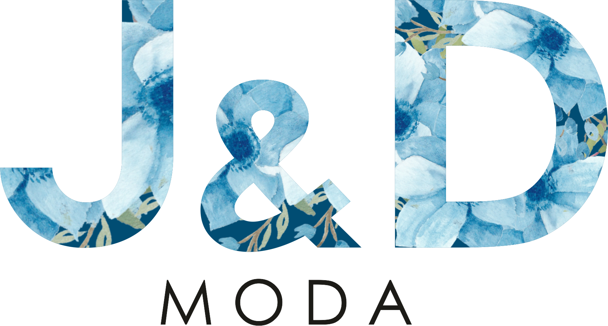
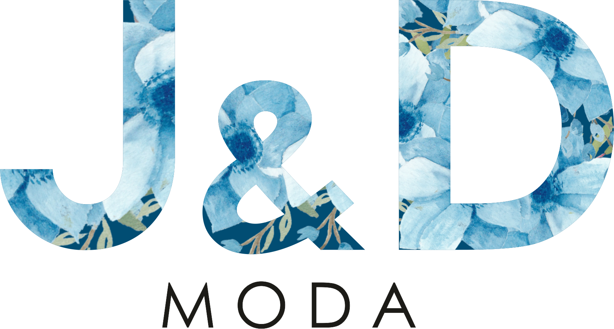

tienda de ropa J&D
CAMISAS 1.1

La Camisa. Es una prenda de vestir compuesta por diferentes elementos que, combinados entre ellos, dan un número infinito de modelos de camisas. Los elementos que mayormente diferencian una camisa de la otra son: el cuello, los puños, los botones, los ojales y los bolsillos.